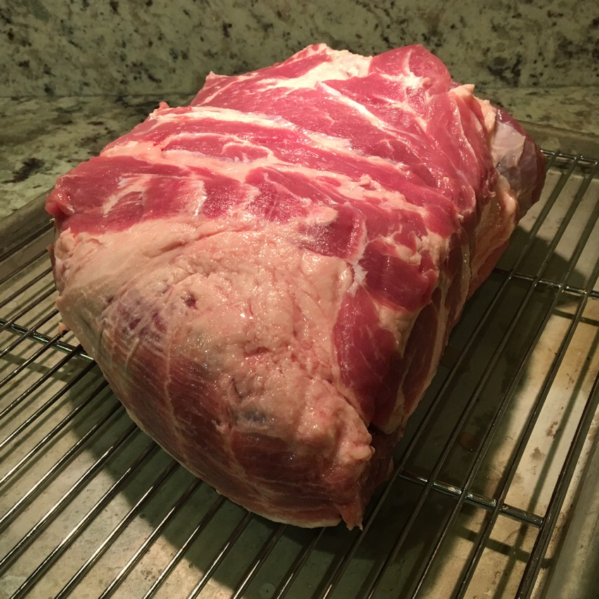
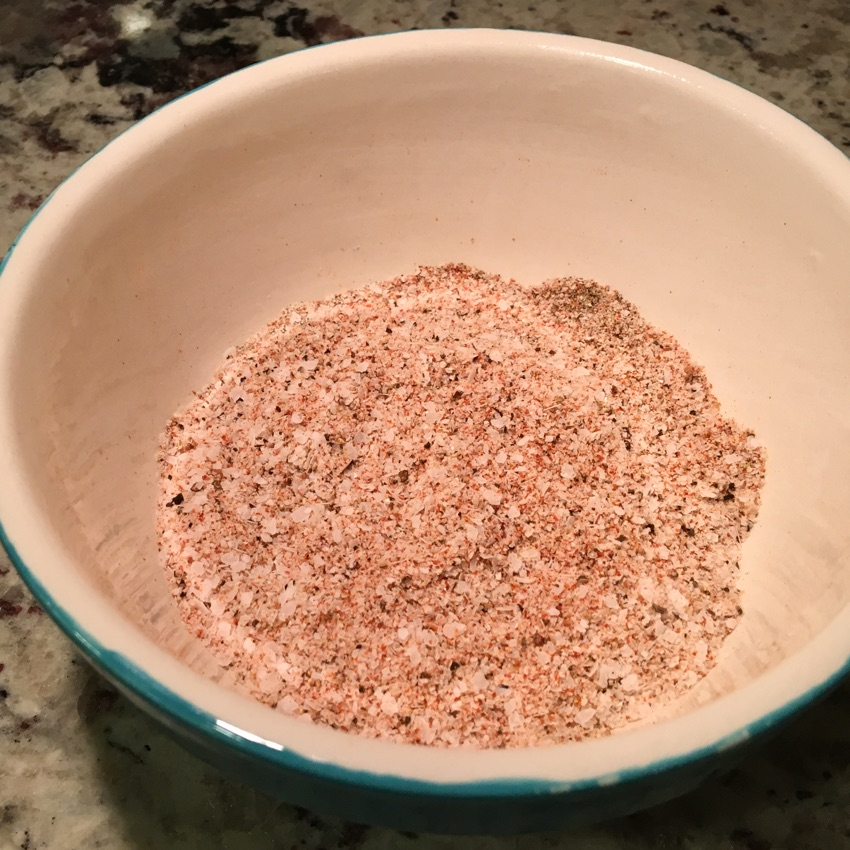
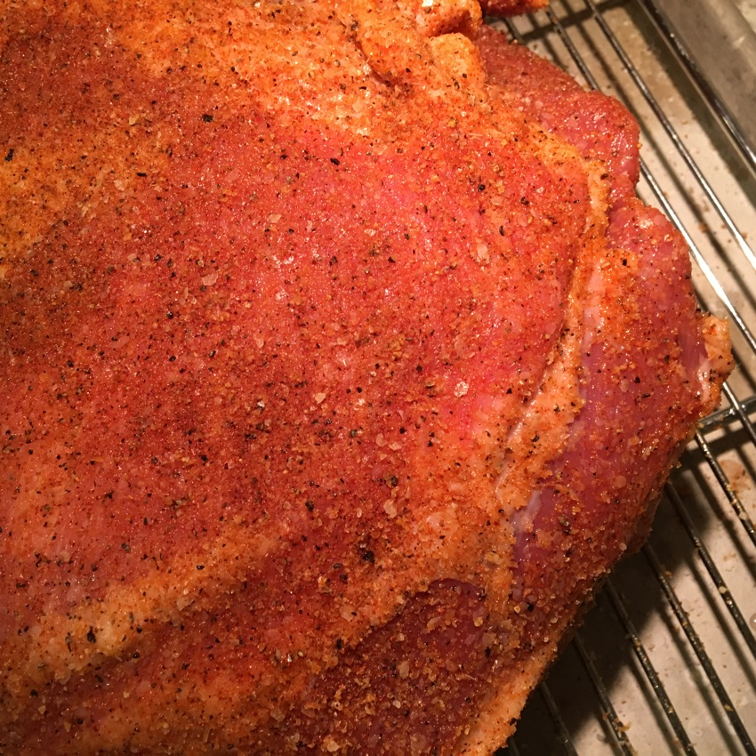
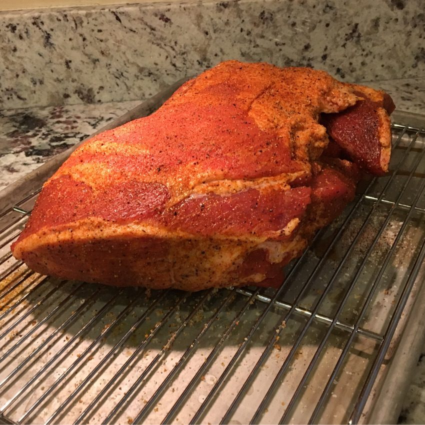
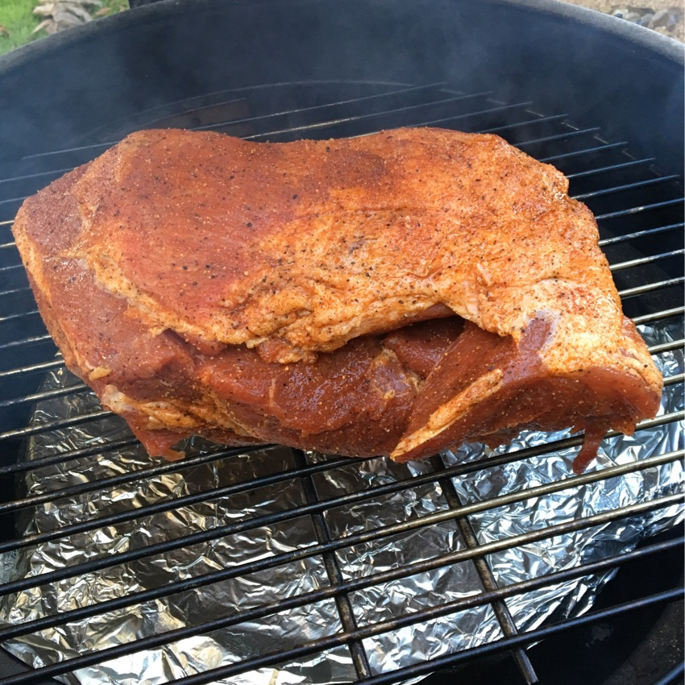
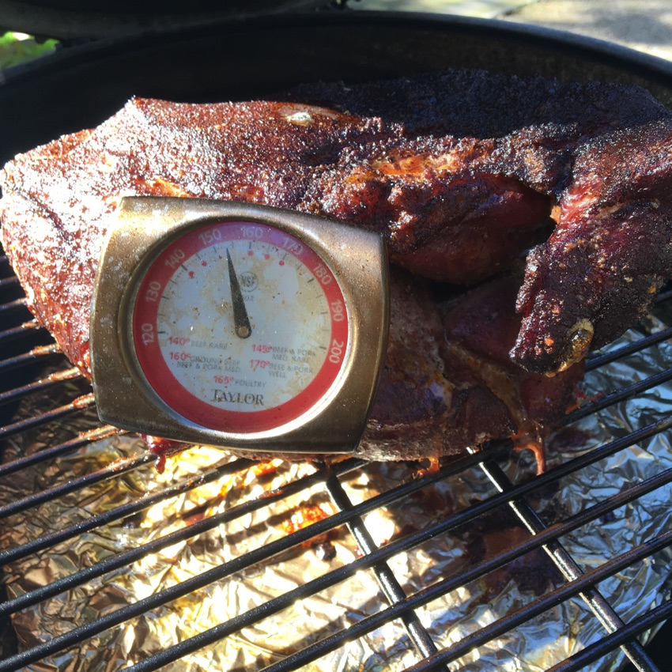
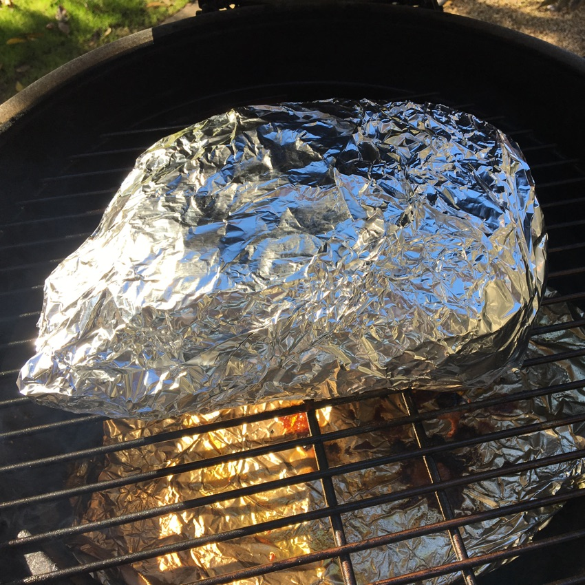
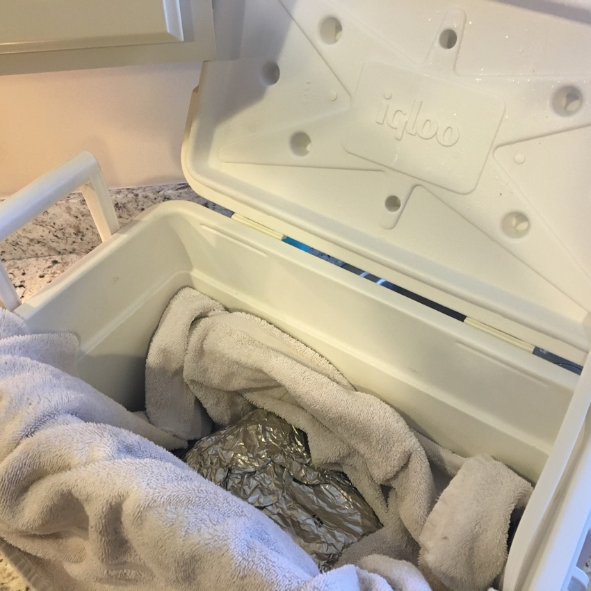
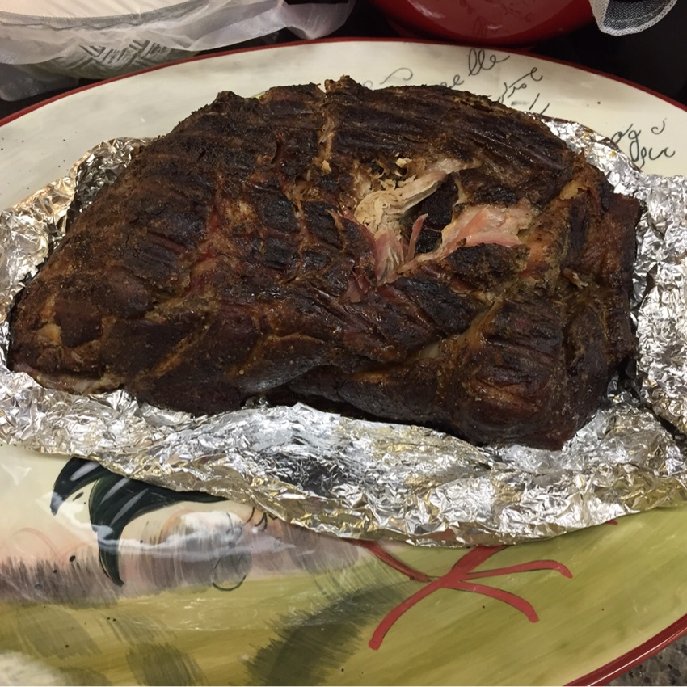
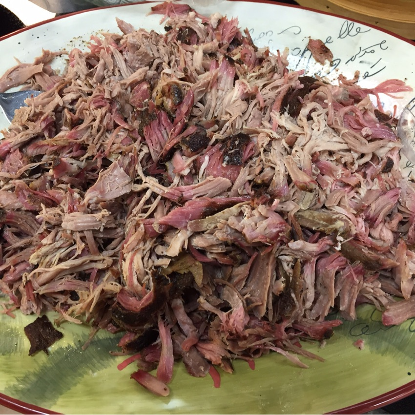

HOW TO SMOKE A PORK SHOULDER
Pork Shoulder (sometimes called Pork Butt) is a great first-time “big” thing to smoke because it is delicious, special, and very forgiving. If you have a smoker or have access to one, this is easy, fun, delicious, and people will think you’re amazing 💅🏽
-

Get some meat
Lots of recipes and blogs claim a bone-in shoulder has better flavor. I once made three shoulders at once for a party and happened to have one bone-in and two boneless and I'm here to tell you it doesn't really matter. Get whatever you can find. Here in Phoenix, my favorite butcher hast great bone-in and Costco has great boneless with a very good price.
-

Prepare your spice rub
I like to keep it very simple. The smoked meat itself should be the standout flavor so I don't use complicated rubs. My personal go-to is: 1/2 Cup Kosher Salt + 3 Tbsp Black Pepper + 1 Tbsp Cayenne Pepper + 1/2 Tsp Smoked Paprika. This gives a nice clean spice and a touch of smokiness to enhance the flavor of the meat without adding much flavor of its own.
-
Pat the meat dry.
Using lots of paper towel, pat the meat all over and between all the flappy bits to remove excess moisture.
-

Oil and salt the meat
Rub the meat all over with olive oil and then sprinkle on the rub and pat it in so it binds well. Get in there thoroughly between all the flaps. IMPORTANT: Use lots of salt. More than you think you need. I had 1/2 cup of kosher salt in this rub and I used almost all of it on a 6.5 pound shoulder. This salt will produce a flavorful salty bark that, once shredded, will season all that meat you aren't getting salt on. It needs to be salty.
-

Rest the meat.
Let the rubbed meat sit uncovered in the fridge for a few hours up to over night. I put mine on a wire rack set in a cookie sheet so any moisture can drip away. This helps form a good bark by drying out the exterior of the meat. IMPORTANT: In the fridge please.
-
Prepare and stabilize the smoker.
Follow the instructions for your smoker. Aim for 190-200F temperature. For smoke, choose something mild like apple, cherry, or maybe oak. I'm not a big fan of the strong woods like hickory and mesquite but even if you are, they're too overpowering for pork. Use plenty of the chunk type wood. Chips are too short-burning for big hunks of meat. I used five big chunks.
-

Place the meat in the smoker naked.
Start the meat off right on the grill/grate unwrapped. If your smoker has an optional indirect heating plate you definitely want to use it. We're going for even heat all around, not grilling from below. Don't bother with apple juice or a pan of water or whatever. None of those things make any difference.
-

Smoke for a few hours until the internal temperature reaches about 150F.
You don't have to be super precise here. I've done it enough I don't even use a thermometer for this part. We're looking for a dryish outside bark and a firm feeling. 140-165F is fine so no stress if you mess up a bit!
-

Wrap tightly and continue smoking.
Now that we have a good bark we need to arrest the loss of moisture by wrapping the meat tightly. A double layer of heavy duty aluminum foil works great. Or if you have it you can use the large heavy duty parchment paper. You want it well covered and well sealed. Don't skimp!
-
Smoke for another few hours until the internal temperature reaches about 195F.
Within reason the higher you go the more tender it is. (NOTE: This is not true with other meats or cuts. Just pork shoulder.) 180 will be almost sliceable. 195 will be toothy, moist and easily shreddable with forks (my preference). 205 will be tender enough to just pull off a pile with tongs that falls apart. Eventually it will get mushy but you have a big range here so NO STRESS. Expect total cooking time to be about 45 minutes to an hour per pound but plan for a little longer just in case.
-

Wrap in a towel and put it in a cooler to rest.
THIS IS NOT OPTIONAL. It is critical that the meat rests to even out the temperature and reincorporate moisture. An unrested shoulder is stringy. A rested shoulder is melt-in-your-mouth perfect. Just leave it wrapped in foil or parchment, wrap an old towel around it and put it in a cooler. I keep one just for this purpose. The styrofoam ones at the grocery will also be fine. The cooler will keep it piping hot. It should rest for an hour if possible and it will hold well for several hours.
-

Take a peek and a bite!
When you're ready to serve, unwrap and take a peek. IMPORTANT: Using a fork or tongs you should now sneak a little bite. Then transfer the meat to a serving platter, crock pot, or whatever. Using two forks, shred it to the texture you prefer, mixing the bark into the meat and pulling out large pieces of fat and membranes as you go. NOTE: Coming out of the cooler it may smell kind of gross (like cigarettes) but the meat won't be this way at all. I think it is just smoke + hot plastic.
-

Serve.
I like mine with white onion, pickles, and jalapeños. Warm corn tortillas or soft white buns are great. If you or your guests want barbecue sauce, more power to you. Or use the pork in other interesting things like steamed buns, tacos, salad or anything else @rachaelray dreams up. Enjoy!